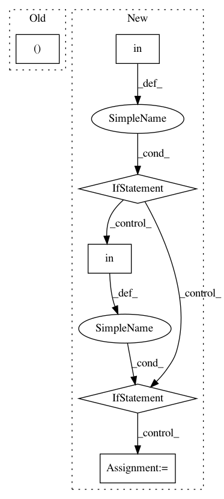

acdff8764ec8a477f0ba8177c019deab52550e3e,open_seq2seq/models/text2speech.py,Text2Speech,maybe_print_logs,#Text2Speech#Any#Any#Any#,180
Before Change
return loss, [decoder_out, final_spectrogram, attention_mask, inputs]
def maybe_print_logs(self, input_values, output_values, step):
y, y_length = input_values["target_tensors"]
predicted_decoder_spectrograms = output_values[0]
predicted_final_spectrograms = output_values[1]
attention_mask = output_values[2]
After Change
self.params["logdir"], step,
append="train")
if "spectrogram" in self.get_data_layer().params["output_type"]:
save_audio(predicted_final_spectrogram_sample, self.params["logdir"], step)
elif "mel" in self.get_data_layer().params["output_type"]:
predicted_final_spectrogram_sample = inverse_mel(predicted_final_spectrogram_sample)
save_audio(predicted_final_spectrogram_sample, self.params["logdir"], step)
return {}
def finalize_evaluation(self, results_per_batch, step):
sample = results_per_batch[-1]
In pattern: SUPERPATTERN
Frequency: 3
Non-data size: 6
Instances
Project Name: NVIDIA/OpenSeq2Seq
Commit Name: acdff8764ec8a477f0ba8177c019deab52550e3e
Time: 2018-06-19
Author: jasoli@nvidia.com
File Name: open_seq2seq/models/text2speech.py
Class Name: Text2Speech
Method Name: maybe_print_logs
Project Name: deepmipt/DeepPavlov
Commit Name: 6d3e4bdc22cc89fb7ecf188ccf0479632012026f
Time: 2018-04-18
Author: dilyara.rimovna@gmail.com
File Name: deeppavlov/models/evolution/check_binary_mask.py
Class Name:
Method Name: get_graph_and_plot
Project Name: deepmipt/DeepPavlov
Commit Name: 4fca544205a55010e8959bb760aece5be80dc3a5
Time: 2018-06-26
Author: dilyara.rimovna@gmail.com
File Name: deeppavlov/models/evolution/check_binary_mask.py
Class Name:
Method Name: get_graph_and_plot